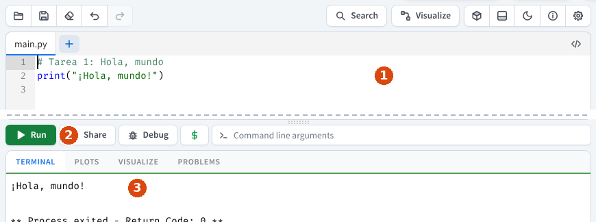
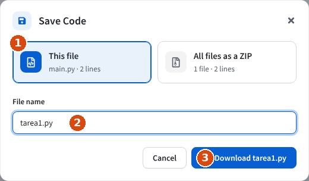

De los bloques al texto
Durante estos años has programado arrastrando bloques (con Scratch y otras herramientas parecidas). En esta unidad vas a dar un paso de gigante: programar escribiendo texto con Python, uno de los lenguajes más usados del mundo. Con él se crean videojuegos, páginas web, apps, inteligencia artificial e incluso se controlan robots.
La buena noticia: las ideas son las mismas que ya conoces (dar órdenes, guardar datos en variables, repetir, decidir). Solo cambia la forma de escribirlas.
¿Qué vas a conseguir?
Al terminar habrás resuelto una colección de tareas de programación, un cuestionario, una prueba práctica y un reto final tuyo, programando en Python. Las tareas y el reto se entregan en Google Classroom.
Lo que vas a aprender, página a página
| Página | Aprenderás a… |
|---|---|
| De los bloques al texto | Ver el mismo programa en Scratch y en Python, escribir tu primer programa y leer un mensaje de error. |
| Datos, operaciones y variables | Hacer cuentas y guardar datos en variables. |
| Entrada y salida | Mostrar información con print() y pedir datos con input(). |
| Condicionales | Tomar decisiones con if, elif y else. |
| Bucles for | Repetir un número de veces, y sumar o contar dentro de un bucle. |
| Bucles while y anidamiento | Repetir mientras se cumpla algo, y meter unas estructuras dentro de otras. |
| Funciones y cadenas | Crear tus propias órdenes y trabajar con textos. |
| Programar sin internet: Thonny | Usar el programa de la prueba práctica. |
| Reto final | Crear tu propio programa eligiendo una misión. |
Al final tienes una Chuleta de Python con todo lo importante en una sola página.
Tu editor: online-python.com
Un editor de Python dentro del navegador
Usaremos online-python.com: funciona dentro del navegador, no hay que instalar nada y no necesitas crear cuenta. Es el mismo en el ordenador del aula y en cualquier ordenador de casa. La página está en inglés y a la derecha puede salir publicidad: no hace falta tocarla.

Ampliar- El editor: aquí escribes tu programa. Los números de la izquierda son los números de línea.
- Run (el botón verde): ejecuta el programa.
- TERMINAL: aquí sale lo que muestra tu programa y aquí escribes tú cuando el programa te pregunta algo.
Guardar tu programa con su nombre
El editor no guarda tu trabajo solo: si cierras la pestaña, se pierde. Para guardarlo, pulsa el icono del disquete (arriba a la izquierda). Se abre esta ventana:

Ampliar- Deja marcada This file (este archivo).
- En File name borra
mainy escribe el nombre de la tarea, por ejemplotarea1.py. - Pulsa Download. El archivo queda en la carpeta de descargas del ordenador.
Cuando una tarea tenga varios ejercicios, los guardarás todos juntos en un .zip. Lo verás en la página Datos, operaciones y variables.
Tu teclado: dónde están los símbolos
En Python vas a escribir símbolos que casi nunca usas. En el teclado español del aula (y en la mayoría de los de casa) están aquí:
| Símbolo | Cómo se escribe | Para qué lo usarás |
|---|---|---|
" | Mayús + 2 | Encerrar textos: "Hola" |
( ) | Mayús + 8 y Mayús + 9 | print( ), input( ) |
= | Mayús + 0 | Guardar en una variable |
: | Mayús + . | Final de if, for, while, def |
# | AltGr + 3 | Comentarios |
* y / | Mayús + + y Mayús + 7 | Multiplicar y dividir |
[ ] | AltGr + la tecla de la derecha de la P, y AltGr + + | Listas: ["piedra", "papel"] |
_ | Mayús + - | Nombres como precio_total |
< > | La tecla de la izquierda de la Z (con Mayús, >) | Comparar |
AltGr es la tecla que está a la derecha de la barra espaciadora. En un Mac las combinaciones cambian: si en casa tienes Mac, pregunta en clase.
Cómo entregar tu trabajo
Todo se entrega en Google Classroom
Cada tarea tiene su tarea en Google Classroom. Abre la tarea, pulsa Añadir o crear → Archivo, elige el .py (o el .zip) de tu carpeta de descargas y pulsa Entregar.
Si no terminas en clase, entrega lo que lleves y sigue en la clase siguiente: no hace falta tener ordenador en casa.
Cómo nombrar tus archivos (¡muy importante!)
Para no perder ni mezclar trabajos, guarda cada entrega con un nombre fijo, el mismo para toda la clase: tarea1.py, tarea2.py, tarea3.zip… No pongas tu nombre ni tus apellidos en el nombre del archivo; Classroom ya sabe que la entrega es tuya. Escribe el nombre en minúsculas, sin espacios y sin tildes ni ñ.